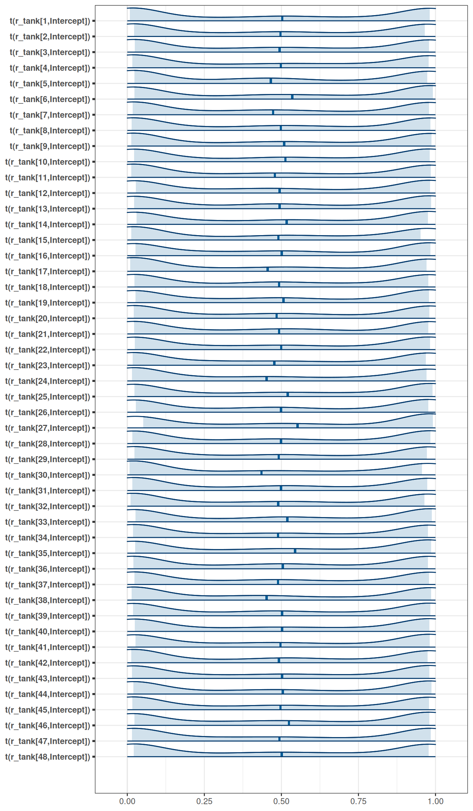
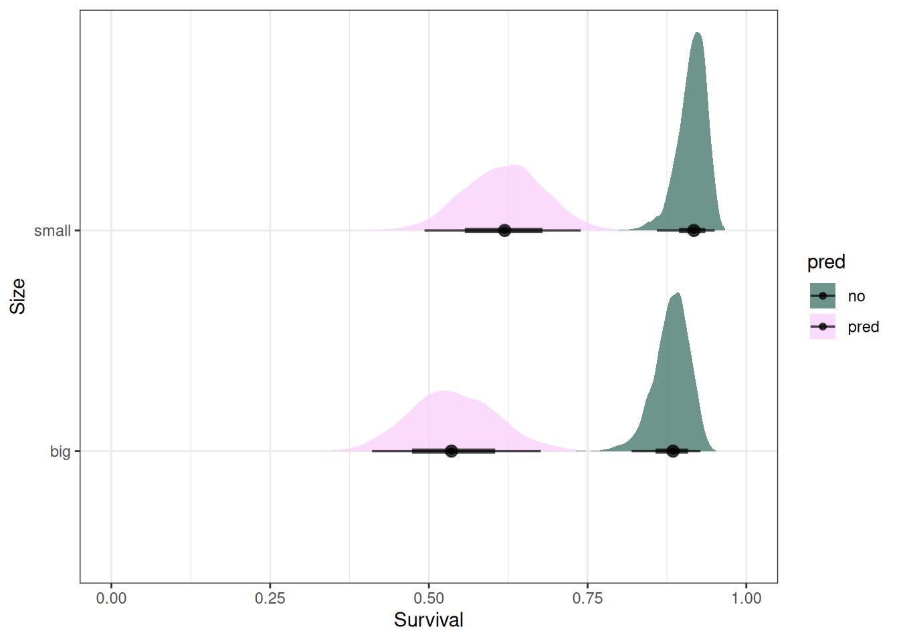
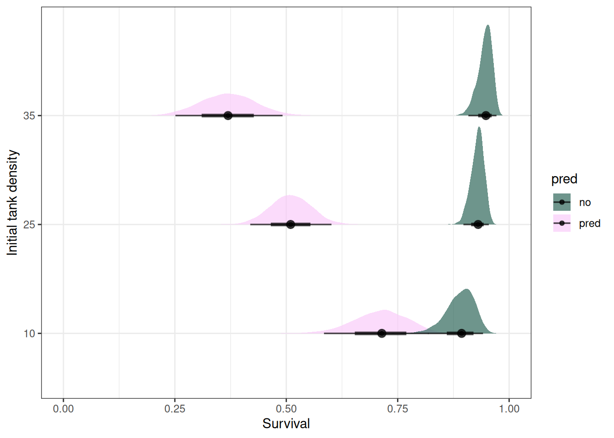

source('R/packages.R')Homework 06
Data
# Data
source('R/data_reedfrogs.R')
# from ?reedfrogs
# density: initial tadpole density (number of tadpoles in a 1.2 x 0.8 x 0.4 m tank) [experiment 1]
# pred: factor - predators present or absent [experiment 1]
# size: factor - big or small tadpoles [experiment 1]
# surv: number surviving
# propsurv: proportion surviving (=surv/density) [experiment 1]
DT_frogs <- data_reedfrogs()Question 1
Conduct a prior predictive simulation for the Reedfrog model. By this I mean to simulate the prior distribution of tank survival probabilities αj. Start by using this prior:
\(\alpha_{j} \sim Normal(\bar{\alpha}, \sigma)\)
\(\bar{\alpha} \sim Normal(0, 1)\)
\(\sigma \sim Exponential(1)\)
Be sure to transform the \(\alpha_{j}\) values to the probability scale for plotting and summary. How does increasing the width of the prior on \(\sigma\) change the prior distribution of \(\alpha_{j}\)? You might try Exponential(10) and Exponential(0.1) for example.
get_prior(
surv | trials(density) ~ (1 | tank),
data = DT_frogs,
family = 'binomial'
) prior class coef group resp dpar nlpar lb ub
student_t(3, 0, 2.5) Intercept
student_t(3, 0, 2.5) sd 0
student_t(3, 0, 2.5) sd tank 0
student_t(3, 0, 2.5) sd Intercept tank 0
source
default
default
(vectorized)
(vectorized)- \(\bar{\alpha}\) corresponds to class Intercept
- \(\sigma\) corresponds to class sd
From: Bürkner, P.-C. (2017). brms: An R Package for Bayesian Multilevel Models Using Stan. Journal of Statistical Software, 80(1), 1–28. https://doi.org/10.18637/jss.v080.i01
fit1 <- brm(formula = time | cens(censored) ~ age * sex + disease + (1 + age|patient), data = kidney, family = lognormal(), prior = c(set_prior("normal(0,5)", class = "b"), set_prior("cauchy(0,2)", class = "sd"), set_prior("lkj(2)", class = "cor")))
Each group-level effect of each grouping factor has a standard deviation parameter, which is restricted to be non-negative … In brms, standard deviation parameters are named as sd_
_ so that sd_patient_Intercept and sd_patient_age are the parameter names in the example [(1 + age|patient)].
tar_load(m_h06_q01_prior_exp_1)
m_h06_q01_prior_exp_1$prior prior class coef group resp dpar nlpar lb ub source
normal(0, 1) Intercept user
exponential(1) sd 0 user
exponential(1) sd tank 0 (vectorized)
exponential(1) sd Intercept tank 0 (vectorized)mcmc_areas(
m_h06_q01_prior_exp_1,
regex_pars = 'r_tank',
transformations = inv_logit
)tar_load(m_h06_q01_prior_exp_0pt1)
m_h06_q01_prior_exp_0pt1$prior prior class coef group resp dpar nlpar lb ub source
normal(0, 1) Intercept user
exponential(0.1) sd 0 user
exponential(0.1) sd tank 0 (vectorized)
exponential(0.1) sd Intercept tank 0 (vectorized)mcmc_areas(
m_h06_q01_prior_exp_0pt1,
regex_pars = 'r_tank',
transformations = inv_logit
)
tar_load(m_h06_q01_prior_exp_10)
m_h06_q01_prior_exp_10$prior prior class coef group resp dpar nlpar lb ub source
normal(0, 1) Intercept user
exponential(10) sd 0 user
exponential(10) sd tank 0 (vectorized)
exponential(10) sd Intercept tank 0 (vectorized)mcmc_areas(
m_h06_q01_prior_exp_10,
regex_pars = 'r_tank',
transformations = inv_logit
)
Question 2
Revisit the Reedfrog survival data, data(reedfrogs). Start with the varying effects model from the book and lecture. Then modify it to estimate the causal effects of the treatment variables pred and size, including how size might modify the effect of predation. An easy approach is to estimate an effect for each combination of pred and size. Justify your model with a DAG of this experiment.
coords <- data.frame(
name = c('D', 'G', 'P', 'T', 'S'),
x = c(1, 2, 3, 1, 2),
y = c(0, 0, 0, 1, 1)
)dagify(
S ~ D + G + P + T,
coords = coords
) |> ggdag(seed = 2, layout = 'auto') + theme_dag()
Survival in a tank depends on density, tadpole size, and predation.
\(S_{i} \sim Binomial(D_{i}, p_{i} )\)
\(logit(p_{i}) = \alpha_{T[i]} + \beta_{P, S}P_{i}\)
\(\alpha_{j} \sim Normal(\bar{\alpha}, \sigma)\)
\(\bar{\alpha} \sim Normal(0, 1)\)
\(\beta_{P, S} \sim Normal(0, 0.5)\)
\(\sigma \sim Exponential(1)\)
get_prior(
surv | trials(density) ~ pred * size + (1 | tank),
data = DT_frogs,
family = 'binomial'
) prior class coef group resp dpar nlpar lb ub
(flat) b
(flat) b predpred
(flat) b predpred:sizesmall
(flat) b sizesmall
student_t(3, 0, 2.5) Intercept
student_t(3, 0, 2.5) sd 0
student_t(3, 0, 2.5) sd tank 0
student_t(3, 0, 2.5) sd Intercept tank 0
source
default
(vectorized)
(vectorized)
(vectorized)
default
default
(vectorized)
(vectorized)- \(\bar{\alpha}\) corresponds to class Intercept
- \(\sigma\) corresponds to class sd
tar_load(m_h06_q02)
m_h06_q02 Family: binomial
Links: mu = logit
Formula: surv | trials(density) ~ pred * size + (1 | tank)
Data: DT_frogs (Number of observations: 48)
Draws: 4 chains, each with iter = 2000; warmup = 1000; thin = 1;
total post-warmup draws = 4000
Group-Level Effects:
~tank (Number of levels: 48)
Estimate Est.Error l-95% CI u-95% CI Rhat Bulk_ESS Tail_ESS
sd(Intercept) 0.86 0.17 0.58 1.24 1.00 1512 2047
Population-Level Effects:
Estimate Est.Error l-95% CI u-95% CI Rhat Bulk_ESS Tail_ESS
Intercept 2.04 0.27 1.50 2.56 1.00 2670 2667
predpred -1.89 0.33 -2.50 -1.21 1.00 2180 2789
sizesmall 0.36 0.31 -0.23 0.97 1.00 3307 2888
predpred:sizesmall -0.02 0.35 -0.71 0.68 1.00 3108 2948
Draws were sampled using sampling(NUTS). For each parameter, Bulk_ESS
and Tail_ESS are effective sample size measures, and Rhat is the potential
scale reduction factor on split chains (at convergence, Rhat = 1).m_h06_q02$prior prior class coef group resp dpar nlpar lb ub
normal(0, 0.5) b
normal(0, 0.5) b predpred
normal(0, 0.5) b predpred:sizesmall
normal(0, 0.5) b sizesmall
normal(0, 1) Intercept
exponential(1) sd 0
exponential(1) sd tank 0
exponential(1) sd Intercept tank 0
source
user
(vectorized)
(vectorized)
(vectorized)
user
user
(vectorized)
(vectorized)Reminder:
- Prediction includes uncertainty of coefficients, variance parameters of the groups and each individual observation
- Epred (expected values) includes the uncertainty of the coefficients and variance parameters of the groups
- Emmeans returns the average marginal effects
# Average marginal effects
emmean_pred <- emmeans(
m_h06_q02,
~ pred * size,
regrid = 'response',
at = list(density = c(25))
) |> gather_emmeans_draws()
ggplot(emmean_pred) +
stat_halfeye(aes(.value, size, fill = pred), alpha = 0.7) +
labs(x = 'Survival', y = 'Size') +
scale_fill_scico_d(begin = 0.3) +
xlim(0, 1)
Tanks with predation had lower survival, and smaller tadpoles had higher survival than bigger tadpoles. There is more uncertainty in tanks with predation.
Question 3
Now estimate the causal effect of density on survival. Consider whether pred modifies the effect of density. There are several good ways to include density in your Binomial GLM. You could treat it as a continuous regression variable (possibly standardized). Or you could convert it to an ordered category (with three levels). Compare the σ (tank standard deviation) posterior distribution to σ from your model in Problem 2. How are they different? Why?
tar_load(m_h06_q03)
m_h06_q03 Family: binomial
Links: mu = logit
Formula: surv | trials(density) ~ pred * density + (1 | tank)
Data: DT_frogs (Number of observations: 48)
Draws: 4 chains, each with iter = 2000; warmup = 1000; thin = 1;
total post-warmup draws = 4000
Group-Level Effects:
~tank (Number of levels: 48)
Estimate Est.Error l-95% CI u-95% CI Rhat Bulk_ESS Tail_ESS
sd(Intercept) 0.78 0.14 0.53 1.08 1.00 1582 1974
Population-Level Effects:
Estimate Est.Error l-95% CI u-95% CI Rhat Bulk_ESS Tail_ESS
Intercept 1.81 0.48 0.91 2.75 1.00 2289 2829
predpred -0.32 0.44 -1.18 0.52 1.00 2368 2365
density 0.03 0.02 -0.01 0.07 1.00 1975 2363
predpred:density -0.09 0.02 -0.13 -0.05 1.00 1738 1763
Draws were sampled using sampling(NUTS). For each parameter, Bulk_ESS
and Tail_ESS are effective sample size measures, and Rhat is the potential
scale reduction factor on split chains (at convergence, Rhat = 1).m_h06_q03$prior prior class coef group resp dpar nlpar lb ub
normal(0, 0.5) b
normal(0, 0.5) b density
normal(0, 0.5) b predpred
normal(0, 0.5) b predpred:density
normal(0, 1) Intercept
exponential(1) sd 0
exponential(1) sd tank 0
exponential(1) sd Intercept tank 0
source
user
(vectorized)
(vectorized)
(vectorized)
user
user
(vectorized)
(vectorized)# Average marginal effects
emmean_pred_dens <- emmeans(
m_h06_q03,
~ pred * density,
regrid = 'response',
at = list(density = c(10, 25, 35))
) |> gather_emmeans_draws()
ggplot(emmean_pred_dens) +
stat_halfeye(aes(.value, factor(density), fill = pred), alpha = 0.7) +
labs(x = 'Survival', y = 'Initial tank density') +
scale_fill_scico_d(begin = 0.3) +
xlim(0, 1)
Compare the from Question 2
(mcmc_areas(m_h06_q02, 'sd_tank__Intercept') + xlim(0, 2) + labs(title = 'Question 2')) /
(mcmc_areas(m_h06_q03, 'sd_tank__Intercept') + xlim(0, 2) + labs(title = 'Question 3'))Scale for x is already present.
Adding another scale for x, which will replace the existing scale.
Scale for x is already present.
Adding another scale for x, which will replace the existing scale.The distribution for tank standard deviation for Question 3 has less density at the upper ranges (>1.25) compared to the tank standard deviation for Question 2. The tank standard deviation is reduced because some of the variability between tanks was due to density and now that it is included in the model, this variability is incorporated into that parameter.